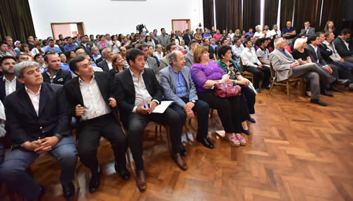

Real Chubut - Agencia de Noticias


Das Neves firmó el contrato para la pavimentación 26 kilómetros de la emblemática Ruta Provincial Nº 63
Entre el Paraje El Molle y José de San Martín.
El gobierno provincial invertirá más de 248 millones de pesos y comprende el tramo que une el Paraje El Molle con José de San Martín. De esta manera, se cumple con una deuda pendiente con los pobladores de la región y se conectan puntos claves para el desarrollo productivo y turístico.
El gobernador del Chubut, Mario Das Neves, firmó con la empresa L.A.L SA esta mañana en Rawson el contrato de ejecución de obra para pavimentar 26 kilómetros de la emblemática Ruta Provincial Nº 63, comprendida entre el Paraje El Molle y José de San Martín, que demandará una inversión que supera 248 millones de pesos y tendrá un plazo de ejecución de 32 meses.
Acompañaron al mandatario provincial en el estrado principal del histórico Salón de los Constituyentes, además del intendente de José de San Martín, Rubén Calpanchay, los ministros de Coordinación de Gabinete, Alberto Gilardino; de Economía, Pablo Oca, y en representación de Vialidad Provincial su presidente Osvaldo Mairal, y el ingeniero jefe, Nicolás Cittadini.
También se encontraban presentes los diputados nacionales Sixto Bermejo, Nelly Lagoria y Ana Llanos, además de funcionarios provinciales, diputados provinciales, intendentes y pobladores de la zona en la que se ejecutarán las obras.
Al hacer uso de la palabra, Das Neves remarcó que “es muy emocionante sobre todo cuando uno está en San Martín, me acuerdo el día que lo anunciamos y muchos no lo creían, porque es lógico pensar que una obra de estas características en un tiempo de búsqueda de recursos no es fácil”.
Sin embargo “soy de los que van a contramano, porque el hilo no se corta por lo más delgado, no siempre cuando hay problemas económicos los que tienen que pagar los costos en nuestra Provincia es la gente del interior, sino entre todos tenemos que socializar los problemas y tratar de salir adelante”.
Por su parte el intendente de José de San Martín, Rubén Osvaldo Calpanchay destacó que “esta obra nos pone muy felices porque estamos peleando por esto hace muchos años y tuvimos que esperar la decisión política del gobernador Mario Das Neves para que se concrete, hoy está plasmado y es una realidad José de San Martín va a tener la ruta Nº 63 y es una alegría inmensa para nuestro pueblo”.
“No solamente es importante para nuestra localidad, sino también para los pueblos vecinos, para la gente de nuestro vecino país de Chile, es una ruta muy importante y para cerrar le hago un pedido especial a la empresa LAL para que tenga en cuenta a la gente de San Martín que está esperanzada de tener trabajo y esta es una oportunidad única”, remarcó el intendente.
UBICACIÓN
La Ruta Provincial Nº 63 se encuentra en la zona centro-oeste de la provincia y tiene su origen en el paraje conocido como “El Molle” en el empalme con la Ruta Nacional Nº 25 (ex Ruta Provincial Nº 62) y finaliza en la Ruta Nacional Nº 40, en cercanías a Gobernador Costa.
Para efectuar la pavimentación de la ruta al momento de licitarse la obra se presentaron seis empresas que ofertaron por debajo del presupuesto oficial que era de 266.520.592,46 pesos, es por ello que en esa ocasión el gobernador Mario Das Neves anunció que “con la diferencia” se construirá el nuevo edificio de la Escuela de Nivel Inicial Nº 458 de José de San Martín.
La empresa L.A.L. S.A será la encargada de llevar adelante los trabajos que comprenden, entre otros, la ejecución de la obra básica, estructura granular, pavimento flexible, además de obras complementarias.
La pavimentación de la Ruta 63 fue un compromiso asumido por el gobernador Mario Das Neves ante los pobladores de esa zona al indicar en varias oportunidades que la ejecución de la obra “es saldar una deuda con gente que ha sufrido mucho”.
La millonaria inversión que realizará el gobierno provincial de manera estratégica beneficiará de manera directa a las localidades de José de San Martín, Gobernador Costa, Paraje El Molle y Pampa de Agna, entre otras.

PUBLICIDAD